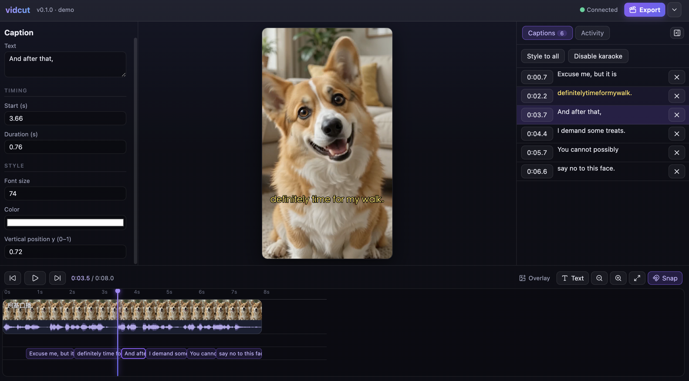

vidcut is a local-first timeline editor for vertical short video. Your agent edits over MCP — import, cut, caption, mix — and every change lands live in your browser, where your red pen has the last word.
5 files referenced in place, nothing copied —AI
tighter here ↑ keep the jump —AI
word-by-word highlight, timed by whisper —AI
writes pause till my stamp — not a black box —you
captions & overlays: preview = export, byte for byte —AI
already running Claude Code? one line:
claude mcp add --transport http vidcut http://127.0.0.1:3845/mcp
This is not a prompt-to-video generator. It is one shared timeline, edited by two hands — and the human hand outranks the machine.
Edits through 31 MCP tools — every operation runs the same validated command path a human edit does. No side doors into the project file.
Streams each change over WebSocket the moment it happens. You watch the timeline move, drag anything the AI got wrong, fix a trim, nudge a caption.
When the agent calls request_review, writes pause. Approve, or send it back with a note — the agent reads your feedback with get_feedback and keeps working.
Every step lands in the activity log with undo / redo. A wrong take is one keystroke away from gone — for the AI's edits and for yours.
A single Node process on 127.0.0.1:3845 serves the UI, the media, the MCP endpoint and the live socket. Your footage is referenced in place — never uploaded, never copied.

Seen above, as shipped: per-word karaoke captions with a live captions list; an inspector that edits timing, size and position down to the decimal; filmstrip and waveform on every clip; captions riding their own timeline track. Export runs 720p to 4K with burn / embed / sidecar subtitles.
Everything the agent can do is a named MCP tool with validation in one command layer. If it isn't on this list, the AI can't do it — and everything on this list, you can undo.
CJK is not an afterthought — captions wrap character-by-character in Chinese, word-by-word in Latin, and leading punctuation never starts a line. Karaoke highlights ride whisper's per-word timestamps.
Honesty first — the README says this too, and the repo's EVIDENCE.md pins every verification number to a commit.
No account, no upload, no key. Node 20+, ffmpeg and Python 3 + Pillow do the work; whisper.cpp is optional, for auto-captions.
brew install ffmpeg pip3 install pillow brew install whisper-cpp # optional — auto-captions only
git clone https://github.com/mao-data/vidcut.git && cd vidcut npm install npm run build -w @vidcut/ui npm run demo
open http://127.0.0.1:3845
claude mcp add --transport http vidcut http://127.0.0.1:3845/mcp
AGPL-3.0-only — use it, modify it, self-host it; serve a modified version as a network
service and you share your changes.
GitHub ·
繁體中文 README
· EVIDENCE.md ·
Contributing